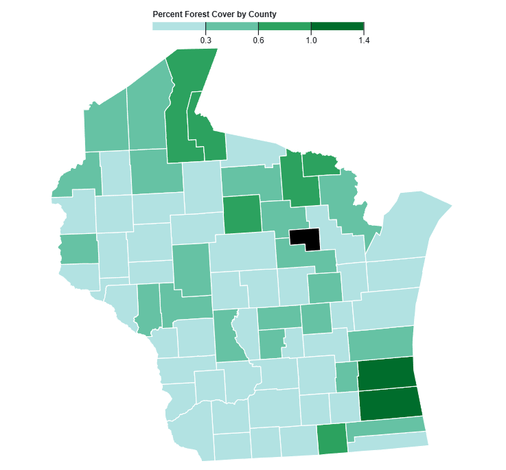
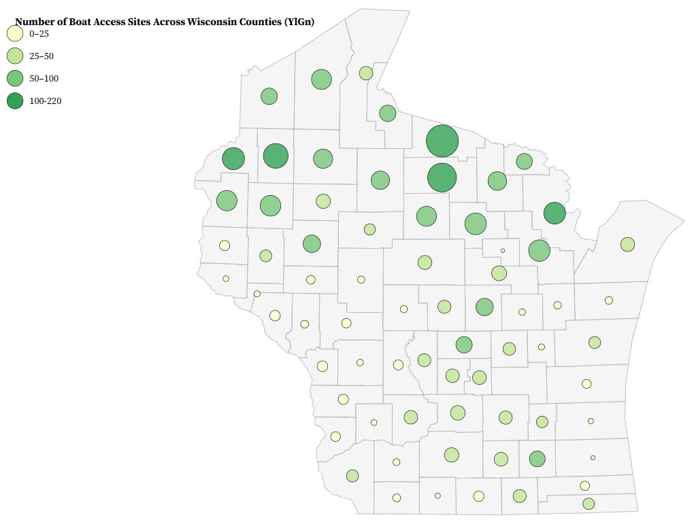
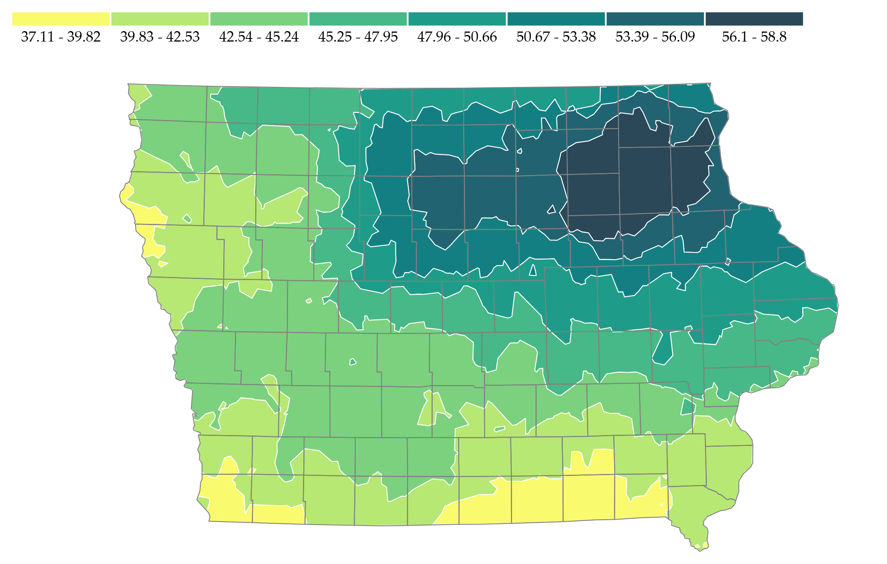
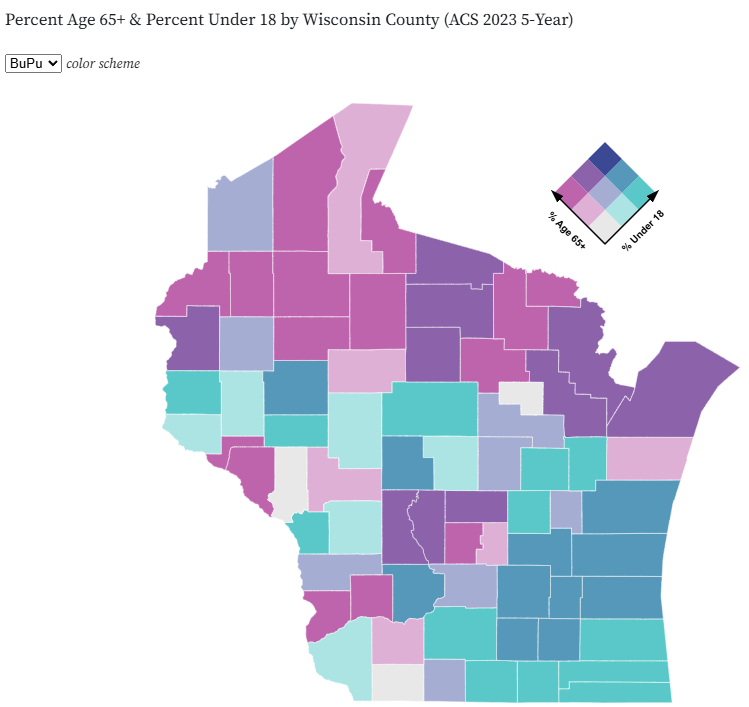
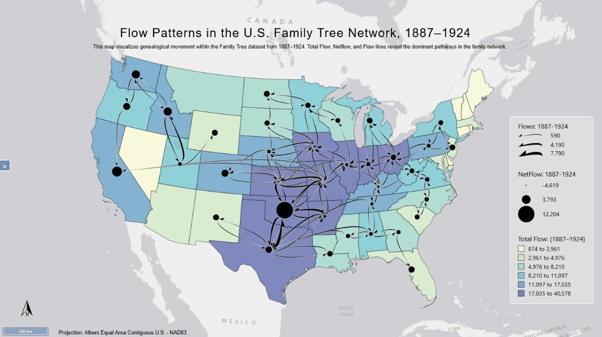
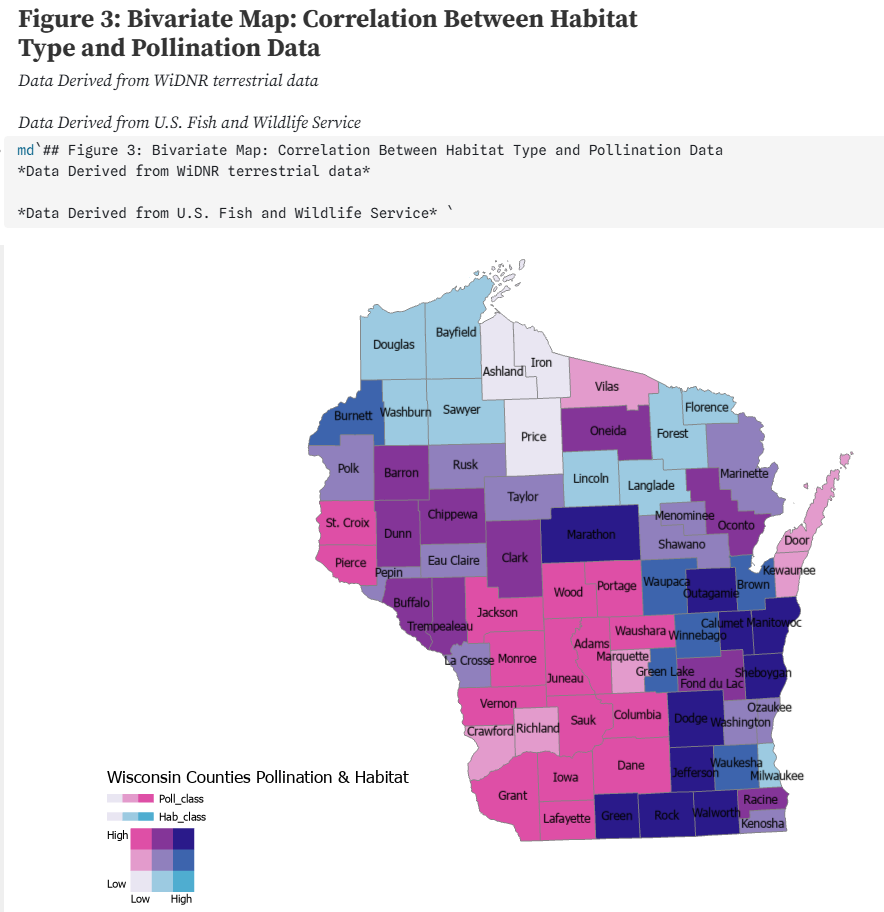

This is a choropleth map of the total acreage of forests across Wisconsin counties. Classification selected for this visual included a sequential color scheme with natural breaks.

This is a graduated symbol map of Wisconsin counties' boat access sites. This can be seen in larger and darker green circles representing higher values, and smaller, lighter yellow circles showing lower values. A manual classification of 4 classes was used to depict the point data.

This isarithmic map is the yearly total precipitation in the state of Iowa. It clearly shows by the darkest color that Northeastern Iowa gets the most precipitation yearly and the southern and western most get the least.

This bivariate choropleth map compares "% age 65 and over, and % age 18 and under" across Wisconsin counties. This data was obtained from the U.S. Census Bureau's American Community Survey 5-year estimates (2015-2019).

This flow map shows the migration of families between capital cities of select states between 1887-1942. Changes in numbers is indicated by colors and arrow size.

This bivariate map shows the relationship between pollinator movement and terrestrial habitat distribution across the state of Wisconsin, at the county level. A notebook to the relationships has been attached, providing insight to the overall distribution and correlation between the two variables. The overall goals within our project were to analyze how pollination services can vary across terrestrial habitat systems in the Midwest. We will also aim to determine how habitat composition can influence the ability of landscapes to support a variety of pollinator communities.